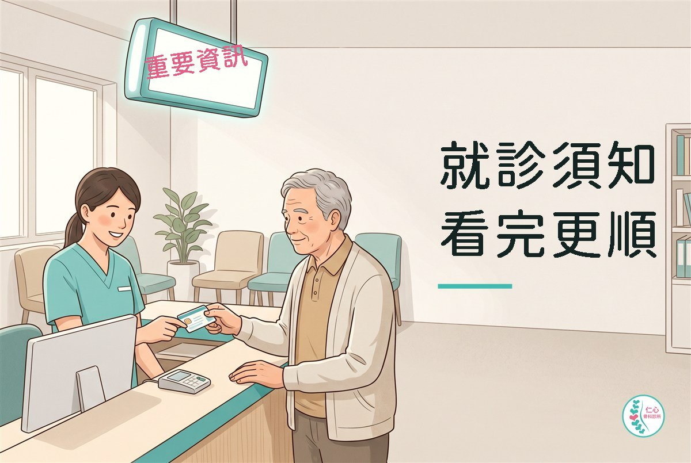
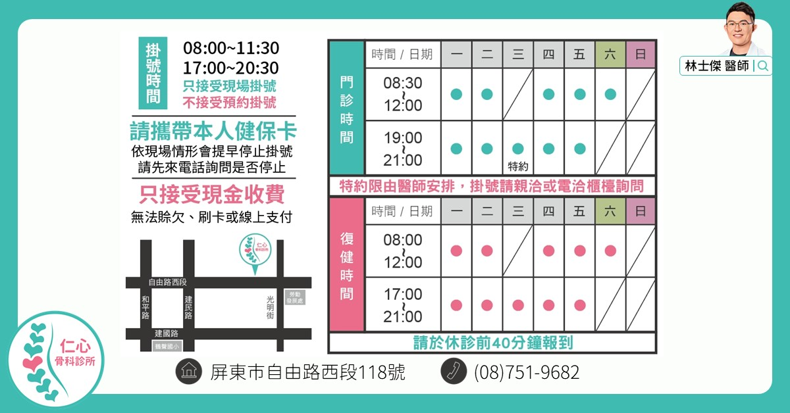
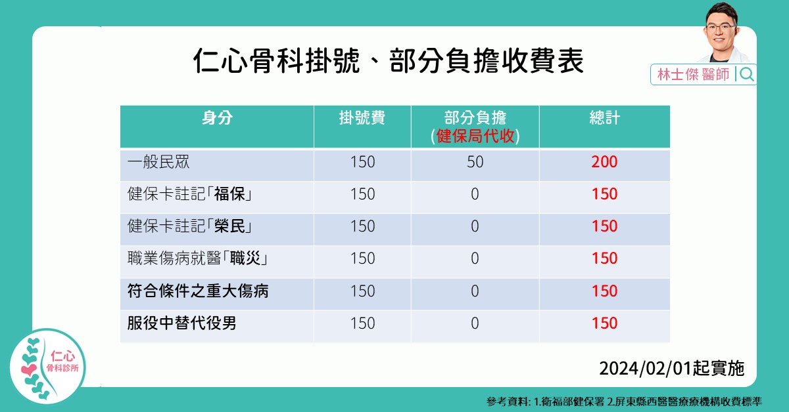
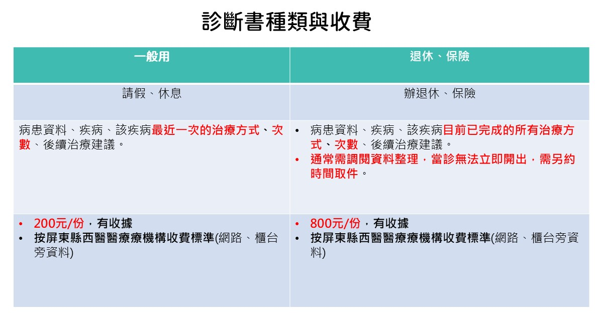

診所公告
掛號、門診、復健注意事項
花點時間看這篇，就醫過程更方便。

看診原則，務必配合
一律配戴口罩
衛福部疾管署 2024/05/08 公告，醫療機構為建議佩戴口罩場所，可依各單位實務現況訂定應佩戴的情境與區域規範。 本診所空間密閉狹小，且多慢性病患者，因此規定一律配戴口罩，保護自己也保護他人。
本人到場
看診、拿藥、開證明都需要病患本人到場，也沒有線上看診諮詢。
醫師非親自診察，不得施行治療、開給方劑或交付診斷書。
這是法律規定，不是診所刁難——而且醫師也不會通靈跟隔空治療。
未滿 18 歲需家長陪同
基於法律規定與醫療院所「知情同意」的程序，18 歲以下需由家長（監護人）陪同，以利病情解釋。
若家長因故無法陪同，可由家長委託的受託人（成年親屬）出示委託書或同意書協助就醫。 這是為了保護就醫的病患，讓人能充分理解就診的風險與治療。相關規定可參考民法第 13 條、醫療法第 63 條與第 64 條。
隱私與個資
- 沒叫到名字，請勿進入診間。其他病人的隱私和你的一樣重要。
- 診所內非經同意禁止錄音、錄影、拍照。
進診間之前
- 進診間請收好手機並開靜音。除了避免干擾看診，也是基本禮貌。
- 衣著寬鬆，以利檢查與治療。肩、膝、腰背的檢查都需要露出患處，太緊的衣褲會拖慢你自己的看診速度。
- 禁帶寵物（導盲犬除外）。
年齡太小、溝通表達困難、重複就醫，或狀況超出本所設備能力的患者，建議直接前往設備與人力更合適的院所，以免白跑一趟、耽誤時間。
診所位置，先記起來
| 項目 | 內容 |
|---|---|
| 地址 | 屏東縣屏東市自由路西段 118 號 1-3 樓 |
| 電話 | (08) 751-9682 |
| 科別 | 骨科 |
鄰近地標：建國市場、屏東縣政府勞動暨青年發展處。
掛號方式與收費
只有當診現場掛號，沒有預約掛號。會依現場情形提早停掛，建議先打電話確認是否還能掛號。

| 項目 | 時間 |
|---|---|
| 上午掛號 | 08:00 ~ 11:30 |
| 晚上掛號 | 17:00 ~ 20:30 |
依現場情形會提早停止掛號，出門前請先來電詢問是否停掛。
門診與復健時間
門診
| 時段 | 一 | 二 | 三 | 四 | 五 | 六 | 日 |
|---|---|---|---|---|---|---|---|
| 08:30–12:00 | ● | ● | — | ● | ● | ● | — |
| 19:00–21:00 | ● | ● | 特約 | ● | ● | — | — |
復健
| 時段 | 一 | 二 | 三 | 四 | 五 | 六 | 日 |
|---|---|---|---|---|---|---|---|
| 08:00–12:00 | ● | ● | — | ● | ● | ● | — |
| 17:00–21:00 | ● | ● | ● | ● | ● | — | — |
● 有診 — 休診。實際診次與臨時休診，請以診所現場公告為準。
週三晚上的門診是特約，限由醫師安排，掛號請親洽或電洽櫃檯詢問。
復健請於休診前 40 分鐘報到，太晚到當天就做不完整套療程。
請帶健保卡與身分證
掛號與就診請攜帶本人的健保卡，並帶身分證備查。
健保卡沒帶或無法讀取，要先押金看診，而且查不到雲端的用藥紀錄與檢查報告—— 那會直接影響評估與治療的準確度，不只是多繳一筆錢的問題。
掛號費與部分負擔

| 身分 | 掛號費 | 部分負擔 | 總計 |
|---|---|---|---|
| 一般民眾 | 150 | 50 | 200 |
| 健保卡註記「福保」 | 150 | 0 | 150 |
| 健保卡註記「榮民」 | 150 | 0 | 150 |
| 職業傷病就醫「職災」 | 150 | 0 | 150 |
| 符合條件之重大傷病 | 150 | 0 | 150 |
| 服役中替代役男 | 150 | 0 | 150 |
單位：新臺幣元。部分負擔為健保局代收。參考衛福部健保署與屏東縣西醫醫療機構收費標準。
- 依健保及相關規定收費，非健保給付的項目需自費。
- 只收現金，無法賒欠、刷卡或線上支付。
唱名要到，提早報到
唱名時人不在現場，還是有補救機會，但有時間限制：
| 診次 | 最晚回櫃檯報到 |
|---|---|
| 早診 | 11:30 前 |
| 晚診 | 20:30 前 |
- 逾時未報到，視同自行退掛，需要重新掛號。
- 報到時若已經過號，由櫃檯安排看診，不是馬上看診。
- 每個人的病情不同，看診時間也不同，連神明也不知道要等多久，請耐心等候。
- 出了診間之後才想到還有問題要問，視同過號，一樣由櫃檯安排。
診斷書怎麼申請
申請人須為本人，或其配偶、直系親屬、旁系親屬、姻親等或法定代理人。 本人申請時請出示身分證核對。
由親屬代為申請時，須同時出示下列三項才能受理：
- 病人身分證正本（兒童請用戶口名簿）
- 申請人身分證正本
- 申請人與病人關係的證明文件，並出具病人親自簽署的委託書
若病人意識昏迷或無法表示同意，委託書可依序由其配偶、直系親屬、旁系親屬、姻親等或法定代理人為之。
開診斷書需要掛號排隊，進診間由醫師確認病患資料，按病歷紀錄據實開立。
依醫師法第 11 條，醫師非親自診察不得交付診斷書； 同法第 28-4 條也明定，出具與事實不符的診斷書，處新臺幣十萬元以上五十萬元以下罰鍰，並得限制執業範圍、停業一個月以上一年以下，情節重大者廢止醫師證書。
種類與收費

| 種類 | 用途 | 內容 | 費用 |
|---|---|---|---|
| 一般用 | 請假、休息 | 病患資料、疾病、該疾病最近一次的治療方式與次數、後續治療建議 | 200 元／份 |
| 退休、保險 | 辦退休、保險理賠 | 病患資料、疾病、該疾病目前已完成的所有治療方式與次數、後續治療建議 | 800 元／份 |
兩種都開立收據，依屏東縣西醫醫療機構收費標準（網路與櫃檯旁均有資料可查）。
退休與保險用的診斷書要把目前已完成的所有治療寫進去，通常需要調閱資料整理，當診無法立即開出，需另約時間取件。有這個需求請提早來，不要等到繳件前一天。
醫療以看診優先，診斷書的開立會排在看診之後。
復健注意事項
骨科的復健和「按摩放鬆」不一樣，它是療程。我在診間最常提醒的是這幾件事：
要連續，不要有空才來
復健的效果建立在頻率上。一週來三次做滿六週，效果遠好過想到才來一次、斷斷續續做半年。 排不出時間的話，直接跟我說，我們調整計畫，不要硬排一個你做不到的療程。
會痠可以，會痛要說
治療當下或隔天有痠脹感是正常的。但如果出現尖銳的痛、麻電感、或是原本的症狀明顯加重，請立刻告訴治療師或回診讓我看，不要忍。
回家作業才是主角
診所裡的儀器治療是輔助，真正讓你好起來的是回家做的那幾個動作。 我開的居家運動不會很多，通常三到五個，一天十分鐘。做，就會有差別。
健保復健療程有次數與期程的規定，第一次安排時櫃檯會說明。有疑問直接問，不用客氣。
自費項目
預防醫學、抗老修復、醫美減重為自費預約制，相關資訊請洽櫃檯。
本文為診所就診須知與一般衛教資訊，不能取代醫師的診察、診斷或治療。 規則若有異動，以診所現場公告為準。